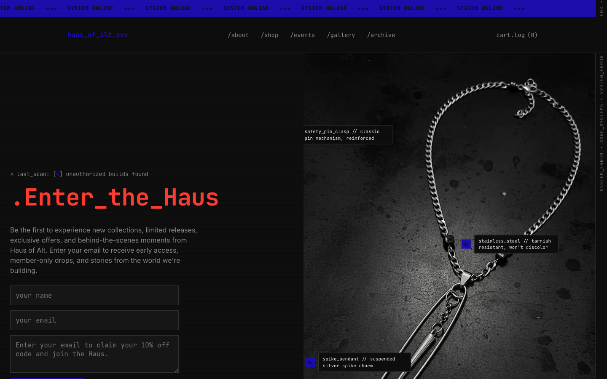
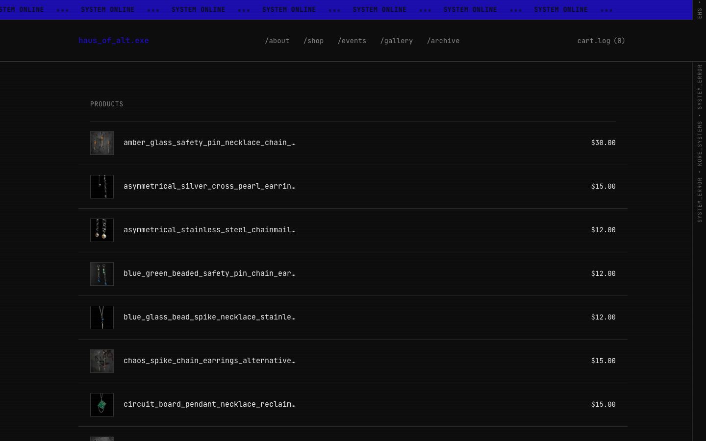
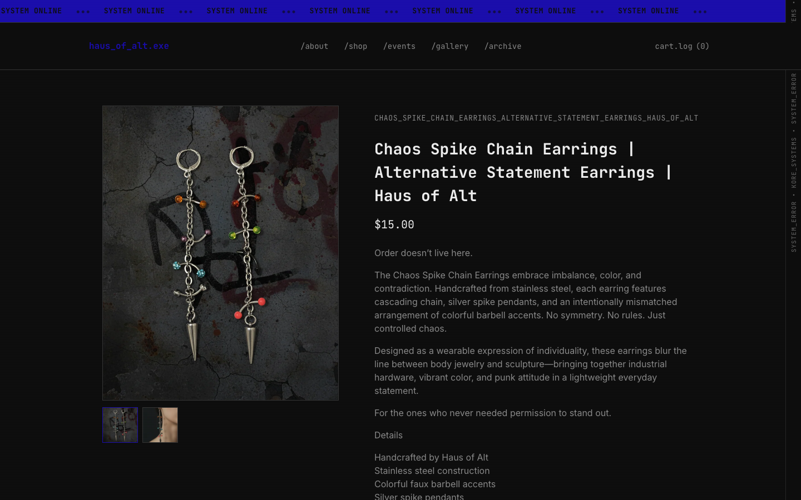
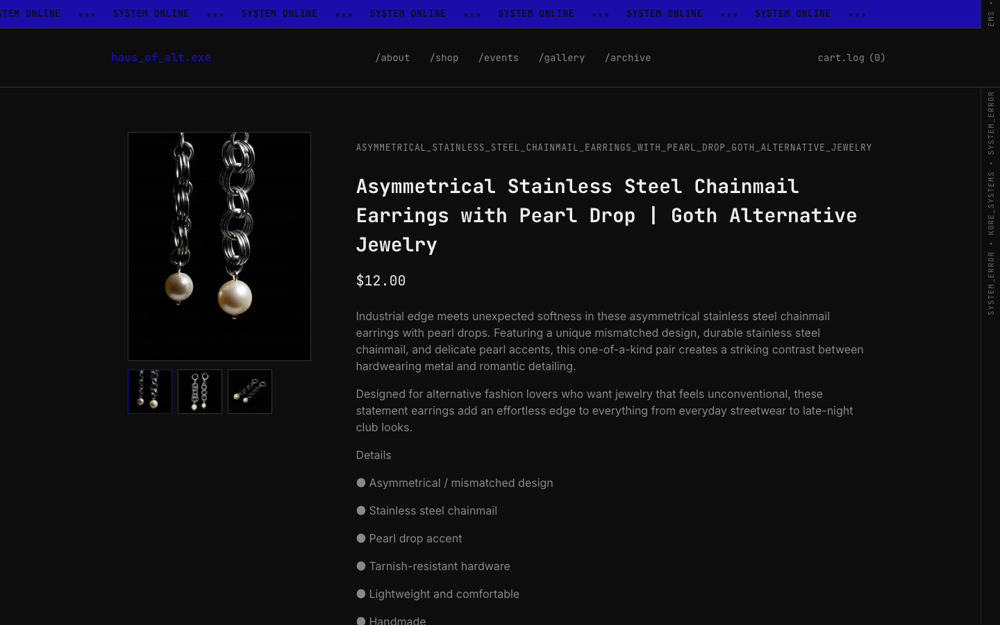
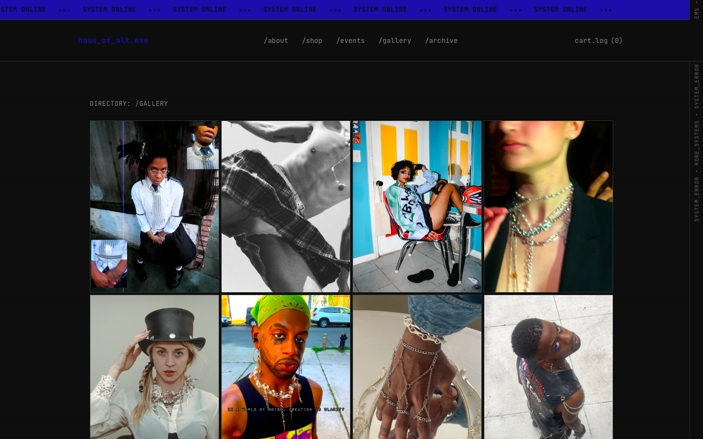
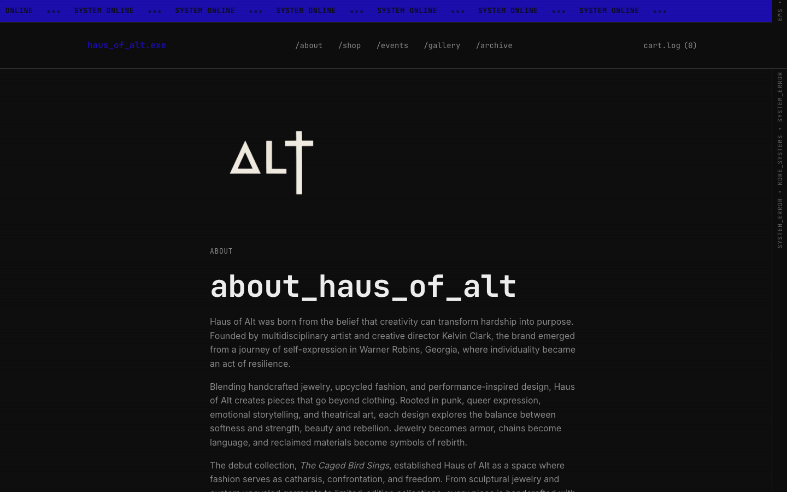
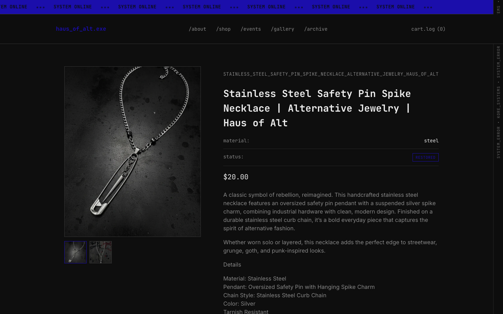

Haus of Alt, Brand Identity & E-Commerce
Live and selling · Handmade in NYC

Haus of Alt is a handmade alternative jewelry brand in NYC. My work covers the identity system, the Shopify store, and the art direction behind both. It sits in a UX portfolio because it shows a complete creative vision carried from concept to a live, selling store.
The Starting Point: A Gap in the Market
Alternative fashion in NYC has a thriving community, but it has almost no brands that serve it with the same craft and intentionality that the community itself brings to self-expression. Mass-produced "edgy" jewelry exists everywhere. Handmade, conceptually grounded, culturally specific jewelry that actually belongs to the scene it claims to represent? That's rare.
Haus of Alt is my answer to that gap. Handmade pieces, limited releases, no mass production. Every product has a story. The brand has a point of view. And the community it's building is real, not manufactured through paid ads or influencer placements, but through the quality of the work and the authenticity of the events.
"We do not follow fashion, we use it."

The Design Challenge
Building a brand that feels handmade and raw, without looking cheap or amateurish, is harder than it looks. The design challenge wasn't making things look "alternative." That's easy. The challenge was building a visual system that could carry the brand's tension: handcrafted product meets precision execution. Raw aesthetic, rigorous craft.
- The brand identity needed to work equally well on a Shopify product page, an event flyer, and a social post without requiring a different design system for each
- The e-commerce experience needed to feel like editorial, leading with atmosphere and narrative before product, without sacrificing conversion
- Limited-edition scarcity had to feel true, not manufactured. No fake countdown timers. No artificial urgency. The scarcity is real: everything is handmade, so supply is genuinely limited
- The brand needed to appeal to a community that is visually sophisticated and immediately rejects anything that feels inauthentic
Brand Identity System
Naming
"Haus", German for house or dwelling, connotes structure, craft, and intentionality. It positions the brand as a place rather than just a product line. "Alt" is both alternative (culture) and shorthand for alter (to change, to transform). The "Haus of" naming convention also echoes the language of couture (House of Chanel, House of Dior), an intentional tension with the brand's anti-fashion positioning.
Color System
Near-black backgrounds. Stark white type. Blood red as the primary accent. The restraint is entirely intentional. Every color decision carries weight because there are so few of them. No pastels, no gradients in the core palette. High contrast as a non-negotiable, both visually and philosophically.
Red was chosen specifically because of its cultural weight in the brand's aesthetic space: danger, passion, ritual, transgression. It's not decorative. It means something.
Typography
Industrial serif display type for headlines, weighted, architectural, deliberately heavy. Clean monospace for product details and pricing. The tension between rough and refined in the type system mirrors the brand's larger identity: handmade object, precision execution.
Visual Language
Glitch effects. 3D skulls. Raw studio photography. Editorial black-and-white portraiture. Mixed-media collage. Every touchpoint is deliberately destabilized, nothing is polished to the point of sterility.


E-Commerce Design (Shopify)
The Shopify store was built with one organizing principle: the experience leads with feeling before it leads with product. Most e-commerce sites prioritize conversion optimization over brand expression. Haus of Alt inverts that, the store is editorial first, commercial second. That decision is itself a brand statement.
Homepage
Full-bleed atmospheric hero with glitch animation and the brand's identity statement front and center. Collection drops are foregrounded, not buried below-the-fold behind sliders and promotional banners.
Product Pages
Photography is the dominant element on every product page, not a thumbnail beside a spec sheet, but full-screen imagery with the product story told below. Every piece has a name, a material description, and a provenance note.
Navigation Architecture
Home / About / Alt Shop / Events / Contact. Five items. No mega-menus, no category dropdowns, no promotional nav items.
Collection: REVIVAL
The current collection is presented as a cohesive editorial release, not a product grid with filters. Each piece in REVIVAL is connected thematically; the collection has a name and a concept.



Current Product Line
Every product in the REVIVAL collection is handmade in New York. Quantities are genuinely limited by production capacity, not manufactured scarcity.
- Broken Halo Choker, $80 · Punk cross detail, hand-assembled, limited run. The signature piece: bold, wearable, unmistakably Haus of Alt.
- Cathedral Spike Drop Earrings, $25 · Hand-assembled in NYC. Architectural spike form, lightweight for wearability.
- Collapse Ritual Chain Bracelet, $25 · Limited release. Industrial chain, handmade finishing.
- Confess Nothing Cross Tassel Necklace, $30 · Cross tassel pendant, handmade in New York. Statement layering piece.
Events: Where the Brand Lives Off-Screen
Haus of Alt produces live events and performance art shows in NYC, intimate gatherings where the brand extends off the screen and into physical space. Event design includes flyers, spatial branding, and environmental design elements that carry the visual identity into the real world.
These aren't marketing events. They're the brand, proof that Haus of Alt stands for something that exists beyond the Shopify storefront.
Why This Belongs in a UX Portfolio
A UX portfolio that only shows wireframes and user flows is a portfolio that only shows part of what a designer can do. Haus of Alt is in this portfolio because it proves capabilities that no enterprise case study can demonstrate alone:
- Strategy without a brief. Every decision, naming, identity, product line, pricing, distribution, was made from scratch. No client to defer to. No existing brand to inherit.
- Full-stack creative execution. Concept, identity, digital experience, product, photography direction, event design. No handoffs. Every pixel owned.
- Brand design as systems thinking. A visual identity that holds across web, product, print, and physical space is a more complex design problem than most UI work.
- Design with meaning. The best design communicates something beyond function. Haus of Alt is a design system that carries culture, identity, and point of view.
"Building something real, with your own money, your own hands, and your own name on it, teaches you things that no client project can."
Live Results
- Shopify store live and actively selling limited-release collections
- Community following building across NYC creative and alternative fashion scene, organic, no paid acquisition
- Events driving in-person brand engagement in NYC art, music, and fashion spaces
- Featured in NYC alternative and underground creative community networks
- All products handmade in New York, no manufacturing partners, no middlemen
Tools, stack, and skills
- Stack
- Shopify custom theme
- Skills
- Brand identity, e-commerce UX, art direction, product page design